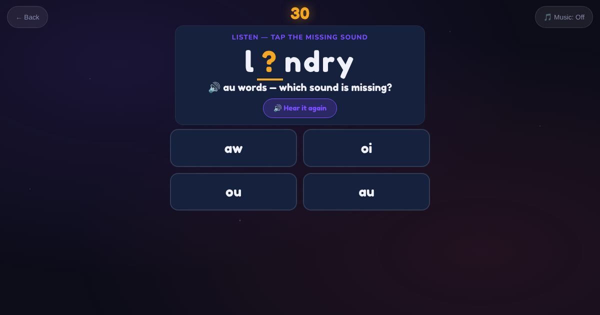

For teachers and tutors
About Elementary Sound Gap
The next step in phonics, built on two-letter sounds: consonant digraphs (sh, ch, th, wh, ph) and vowel teams (ee, ea, ai, ay, oa, oe, ie, ue, oo, ou and more). The learner hears a word like "rain" and taps the missing sound. The words are from everyday life: ship, chips, phone, train, boat.

What is in the game
- Consonant pairs: sh, ch, th, wh and ph, in words like ship, chips, this, think, when and phone.
- Vowel pairs: ee, ea, ai, ay, oa, oe, ie, ue, oo, ou, ow, oi, oy, au and aw, in words like tree, eat, rain, day, boat, pie, blue, moon, book, out, cow, coin, boy and saw.
- Silent e words, like cake, nine, hope, ride and game.
- Beginning blends: st, bl, tr, dr, cl, fl, gr, pl, br, cr, sl and sp, in words like stop, black, tree, class, green and play.
- Common endings: ck, ll, ff, ss, zz, tch, dge, ed and ing, in words like duck, ball, catch, bridge, played and going.
- The wrong choices are other patterns from the same group, so sh is set against patterns like ch, th, wh and ph.
Teaching tips
- Teach one group at a time, starting with the consonant pairs, before mixing them in the game.
- oo and ou each make more than one sound: moon and book, out and could. Point this out before those rounds.
- Use the study lists in Words 2 on the home page to hear each pattern before playing.
How to play
- Listen to the word.
- Find the gap.
- Tap the missing sound.
Play it as a class
Choose Elementary Sound Gap in the Teacher Game. It is a good way to revise one sound pattern with the whole class.